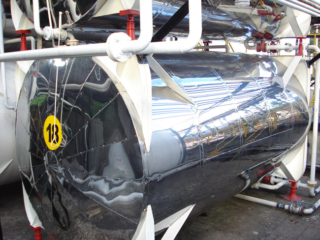
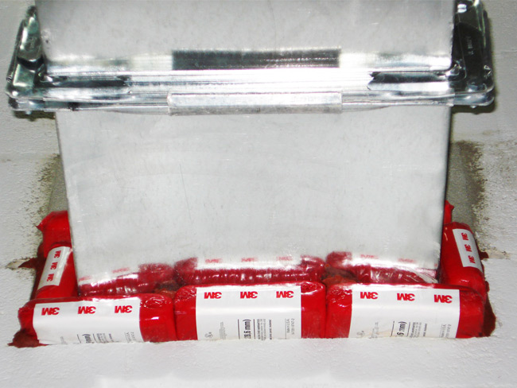
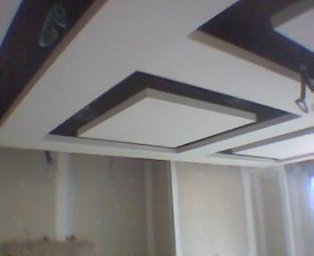

Nuestros Servicios
Acústica
Unidad especializada en la identificación, estudio, investigación y mitigación de la contaminación sonora, con el fin de proporcionar confort, bienestar y seguridad en la industria y la construcción, mediante soluciones integradas, garantizadas, prácticas y económicas, aplicables a problemas acústicos, tanto de reducción de ruido como de acondicionamiento de espacios.
{kind=link}

{kind=link}
{kind=link}
Acústica Arquitectónica
Aplicaciones
- Acondicionamiento Acústico
- Control de Ruido en la Construcción
- Aplicaciones de Piso
- Aplicaciones para Muro
- Aplicaciones de Techo y Cielo Rasos
{kind=link}
{kind=link}
{kind=link}
{kind=link}
Acústica Industrial
Aplicaciones
- Cabinas Acústicas
- Silenciadores
- Puertas Acústicas
{kind=link}
{kind=link}
{kind=link}
Térmica
Unidad de ingeniería especializada en el estudio, análisis, especificación, instalación y mantenimiento de sistemas de aislamiento de procesos y equipos térmicos industriales. Ofrecemos a la industria la forma más eficiente de ahorrar energía y mejorar la rentabilidad de sus procesos a través del uso eficiente de sus recursos.
{kind=link}
{kind=link}
{kind=link}
{kind=link}
Aislamientos Térmicos
Aplicaciones
- Tuberias
- Tanques
- Ductos
- Calderas
- Filtros
{kind=link}

{kind=link}
{kind=link}
Aire Acondicionado
Aplicaciones
- Tuberías y Equipo
- Ductos de Aire Acondicionado
{kind=link}
{kind=link}
Aislamiento Térmico Ambiental
Aplicaciones
Aseguramos temperaturas internas confortables que incrementan la productividad y el rendimiento en:
- Bodegas
- Fábricas
- Locales
{kind=link}
{kind=link}
{kind=link}
Protección Pasiva contra Incendios
Unidad de Protección contra Incendios que tiene por objeto asistir a la industria y la construcción a evaluar, inspeccionar, redactar especificaciones, diseñar, implementar e instalar sistemas de protección contra incendio mediante el empleo de soluciones integrales con productos homologados de los principales y más reconocidos fabricantes mundiales, con el fin de prevenir la aparición de un incendio, impedir o retrasar su propagación y facilitar por último su extinción.
{kind=link}
{kind=link}
{kind=link}
{kind=link}
Revestimiento de Estructuras
Es el revestimiento que se le hace a las estructuras metálicas con productos ignífugos, para aumentar la estabilidad al fuego de los elementos estructurales metálicos hasta los límites requeridos, donde el material aplicado funciona como aislante térmico, disminuyendo de forma efectiva el flujo de calor.
Aplicaciones

{kind=link}
{kind=link}
{kind=link}
Barreras Cortafuego
Materiales para sellamiento de penetraciones, que proporcionan la capacidad de impedir la propagación de las llamas y humos a través de juntas o penetraciones: bandejas portacables, tuberías, puertas, ductos de ventilación, etc.
Aplicaciones
{kind=link}
{kind=link}
{kind=link}
{kind=link}
Puertas Cortafuego
Es una barrera contra el fuego que se ubica en accesos que comunican un espacio y que tienen como objetivo confinar el fuego evitando su extensión y propagación.
Aplicaciones
{kind=link}
{kind=link}
{kind=link}
Persianas
Beneficios tanto en zonas Frías como zonas Cálidas:
- Aislamiento térmico y acústico de su Hogar u Oficina
- Control de luz solar, logra el oscurecimiento total de la habitación
- Brinda Protección y Seguridad al interior
- Mayor Privacidad
- Recomendables para zonas de ciclones y huracanes
- Ahorro de Energía
- Manejo Manual o Automático

{kind=link}


Toldos
Nuestros toldos retráctiles permiten a los usuarios controlar el clima de acuerdo a sus necesidades. Cuando la lluvia amenaza, o cuando hace calor, el sistema de automatización desenrolla el toldo para una protección casi instantánea. En pruebas de laboratorio, las mediciones muestran que bajo el dosel de un toldo, la temperatura puede ser 20 grados más fresca.
Nuestros Toldos mantienen más fresca la temperatura al interior del hogar o la oficina, proporcionando ahorros de energía eléctrica por un menor consumo del aire acondicionado. Nuestros toldos evitan que el sol brille a través de ventanas y puertas de vidrio, previniendo la decoloración de alfombras y muebles. Para los niños y las mascotas, ofrecen un lugar protegido de los rayos directos del sol. Nuestros Toldos tienen una vida útil de más de 40 años.

{kind=link}
Puertas
Nuestras puertas han pasado las pruebas obligatorias marcadas por la norma europea UNE-EN 13241-1, cumpliendo de esta forma con todas las características de seguridad y prestaciones.

{kind=link}
Celosias
Las celosías encuentran aplicación en cerramientos, tejadillos y tantos otros usos como la imaginación del Arquitecto pueda proyectar.
La disposición de la celosía puede ser horizontal o vertical, dependiendo de la orientación de la fachada y de la incidencia de los rayos solares.
Óptimas para su aplicación en cerramientos de fachadas, patios, terrazas, galerias, marquesinas, tejadillos, etc.
La ausencia de tornillos facilita su montaje en obra.
{kind=link}

Cortinas
Son el modelo de cortina más actual, en consonancia con las tendencias de decoración de hoy en día.
Ideales para el control de la luz en cualquier tipo de estancia y sin ningún tipo de mantenimento.
Disponemos de una gran variedad de tejidos con filtro solar, screen, black out, tejido sol y luz, para todo tipo de ambientes y necesidades.


Mosquiteras
Además de su función de protección de la entrada de insectos, pensamos en la belleza de los acabados.
Bajo ésta filosofía, ofrecemos multitud de terminaciones diferentes, adaptadas al color de la ventana.
Un aspecto muy importante en cuanto a seguridad es que nuestras telas son ignífugas (no arden con el fuego). Excepto la del modelo de mosquitera plisada que, por su forma, requiere la utilización de un material más rígido, que lleva más cantidad de petróleo en su fabricación.

{kind=link}
DRYWALL
Manejo profesional de instalción de sistemas constructivos livianos o cartón yeso con implantación de la normativa CCU RU PCCA de construcción, haciendo de este material el complemento ideal para la lana de roca permitiendo excelentes acabados y cumpliendo con los estandares de construcción en el campo térmico, acústico y barreras contra el fuego.
{kind=link}